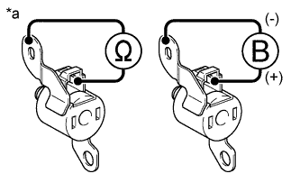

DTC P0751 Характеристика электромагнитного клапана переключения передач "A" (электромагнитного клапана переключения передач S1) |
| Код DTC | Условие обнаружения DTC | Неисправный участок |
| P0751 | Заедание клапана S1 во включенном состоянии*1: ECM регистрирует наличие неисправности при одновременном выполнении обоих следующих условий (логика диагностирования за 2 поездки). (a) Когда ECM передает в трансмиссию команду переключения на 3-ю передачу, фактически происходит переключение на 2-ю передачу. (b) Когда ECM передает в трансмиссию команду переключения на 4-ю передачу, фактически происходит переключение на 1-ю передачу. |
|
| P0751 | Заедание клапана S1 в выключенном состоянии*2: ECM регистрирует наличие неисправности при одновременном выполнении обоих следующих условий (логика диагностирования за 2 поездки). (a) Когда ECM передает команду переключения на 1-ю передачу, фактически происходит переключение на 4-ю передачу. (b) Когда ECM передает команду переключения на 4-ю передачу, фактически происходит переключение на 4-ю передачу. |
|
| Передача, заданная командой ECM | 1-я | 2-я | 3-я | 4-я |
| *1: фактическая передача при заедании S1 во включенном состоянии | 1-я | 2-я | 2-я | 1-я |
| *2: фактическая передача при заедании S1 в выключенном состоянии | 4-я | 3-я | 3-я | 4-я |
| ACTIVE TEST |
Прогрейте двигатель.
Выключите зажигание.
Подсоедините портативный диагностический прибор к DLC3.
Установите замок зажигания в положение ON (ВКЛ).
Включите портативный диагностический прибор.
Войдите в следующие меню: Powertrain / Engine and ECT / Active Test.
В соответствии с указаниями на дисплее выполните диагностику в режиме ACTIVE TEST.
| Информация на дисплее прибора | Испытываемое устройство | Диапазон регулирования | Замечание по диагностике |
| Control the Shift Position | Управление электромагнитными клапанами переключения передач и установка каждой передачи |
| Можно проверить работу электромагнитных клапанов переключения передач. [Состояние автомобиля] 50 км/час (30 миль в час) или ниже |
| Передача, заданная командой ECM | 1-й | 2-я | 3-я | 4-я |
| Электромагнитный клапан переключения передач S1 | ON (ВКЛ) | ON (ВКЛ) | OFF (ВЫКЛ) | OFF (ВЫКЛ) |
| 1.ПРОВЕРЬТЕ, ОТОБРАЖАЮТСЯ ЛИ ДРУГИЕ DTC (ПОМИМО DTC P0751) |
Подсоедините портативный диагностический прибор к DLC3.
Установите замок зажигания в положение ON (ВКЛ).
Включите портативный диагностический прибор.
Войдите в следующие меню: Powertrain / Engine and ECT / Trouble Codes.
С помощью портативного диагностического прибора считайте коды DTC.
| Результат | Следующий шаг |
| Отображается только код P0751 | А |
| Помимо кода P0751 отображаются другие DTC | B |
|
| ||||
| А | |
| 2.ПРОВЕРЬТЕ ЭЛЕКТРОМАГНИТНЫЙ КЛАПАН ПЕРЕКЛЮЧЕНИЯ ПЕРЕДАЧ SL1 |
|  |
Снимите электромагнитный клапан переключения передач S1.
Измерьте сопротивление в соответствии со значениями, приведенными в таблице ниже.
| Контакты для подключения диагностического прибора | Условие | Заданные условия |
| Контакт разъема электромагнитного клапана переключения передач S1 - корпус электромагнитного клапана переключения передач S1 | 20°C (68°F) | 11 - 15 Ом |
Подайте в электромагнитный клапан переключения передач напряжение аккумуляторной батареи 12 В и убедитесь в том, что клапан приводится в движение, издавая характерный для этого звук.
| Условия измерений | Заданные условия |
| Клапан приводится в движение, издавая характерный звук. |
| *a | Устройство с неподсоединенным жгутом проводов (электромагнитный клапан переключения передач S1) |
|
| ||||
| OK | |
| 3.ПРОВЕРЬТЕ КОРПУС КЛАПАНОВ ТРАНСМИССИИ В СБОРЕ |
Проверьте корпус клапанов трансмиссии в сборе (Нажмите здесь).
|
| ||||
| OK | ||
| ||